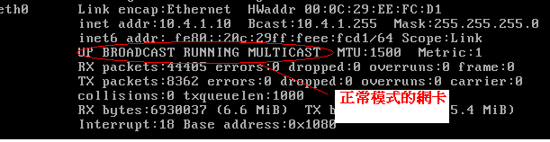
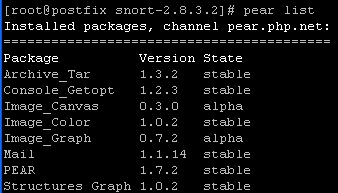

感謝您對「自由軟體鑄造場」的支持與愛護，十多年來「自由軟體鑄造場」受中央研究院支持，並在資訊科學研究所以及資訊科技創新研究中心執行，現已完成階段性的任務。 本網站預計持續維運至 2021年底，網站內容基本上不會再更動。
也紀念我們永遠的朋友 李士傑先生（Shih-Chieh Ilya Li）。
也紀念我們永遠的朋友 李士傑先生（Shih-Chieh Ilya Li）。
以 Snort 實作入侵偵測系統
建立日期 2011-03-03 05:10 最近更新在 2011-03-25 14:50
前言
在一般企業中通常會設置防火牆作為防止駭客入侵的第一道防線，有些企業甚至認為防火牆即是唯一需要的資安設備，但在實務上，防火牆並無法有效阻擋所有種類的網路攻擊行為。也因此有所謂的入侵偵測系統設備（既然無法阻擋攻擊，那就記錄攻擊行為，以便事後追查，當然目前也有所謂的入侵預防系統 (Intrusion Prevention System, IPS)，除了可記錄惡意行為外還可直接阻擋正在進行中的惡意行為）。在本篇文章中，筆者將結合開源碼社群中最有名的入侵偵測軟體 (Snort) 與 Web 介面的管理軟體 (BASE) 實作一個網頁型的入侵偵測系統。本系統所需套件如下表：
| 軟體名稱 | 網址 | 說明 |
| Fedora 11 | https://fedoraproject.org/ | Linux 作業系統 |
| Libpcap | https://www.tcpdump.org/ | 擷取網路封包的程式庫 |
| PCRE | https://www.pcre.org/ | 正規化表示法的程式庫 |
| Snort | https://www.snort.org | 網路型入侵偵測系統 |
| PHP | https://www.php.net | 網頁程式語言 |
| Apache | https://www.apache.org | 網站伺服器 |
| BASE (Basic Analysis and Security Engine) | https://base.secureideas.net | 網頁式入侵偵測系統管理程式 |
| MySQL | https://www.mysql.com | 資料庫軟體 |
| ADOdb | https://adodb.sourceforge.net/ | PHP 資料庫程式庫 |
什麼是入侵偵測系統
入侵偵測系統依偵測型式可分為網路型入侵偵測系統（Network-based Intrusion Detection System，以下簡稱為 NIDS）及主機型入侵偵測系統（Host-based Intrusion Detection System，在此我們不多加討論主機型入侵偵測系統）。NIDS
網路型入侵偵測系統通常部署在網域閘道上 (gateway)，通過竊聽 (sniffer) 的方式，即時監測網路上的封包並比對攻擊模式，當發現有疑似入侵行為時能即時提出警告的防禦系統。一般而言 NIDS 網路部署如下圖示：▲圖 1
NIDS 部署在網域閘道上 (gateway) 監控所有的封包並與攻擊模式資料庫比對，一旦發現有符合攻擊樣式的網路封包，即觸發相關事件來通知管理者，相信細心的讀者一定會發現上圖中的入侵偵測系統 (Snort) 是接在 switch 裝置前的 hub，而不是與 switch 裝置直接連接，這是因為封包在這兩種裝置上傳遞方式不同的緣故。在 hub 上，封包是採用廣播的方式，當封包進入到 hub 時，將會以廣播的方式將封包傳遞給 hub 上所有的主機，但只有目的主機會接收此封包，也就是說，在 hub 上連接的主機都會接收到封包，只是沒收下來而已，在這個情況下，如果我們讓網卡進入所謂的混亂 (promiscuous) 模式，那網卡就會強制的將同一 hub 上的所有封包資訊接收下來（這也是一些以竊取資料為目的木馬程式的特徵），所以有些網管人員會特別注意相關 log 檔案是否有類似 (promiscuous) 的字串，不過 Snort 在啟動後，也會強迫網卡進入混亂 (promiscuous) 模式，藉此取得其它主機的封包。以 Linux 系統為例；讀者可利用 ifconfig 指令查看目前網卡的狀況，如下圖為一個正常模式的網卡，在此模式下，網卡僅會處理與本身相關的封包。

▲圖 2
讀者可利用 ifconfig eth0 promisc 指令，讓網卡進入混亂 (promiscuous) 模式，如下圖即為一個進入混亂 (promiscuous) 模式的網卡，在此模式下，網卡會處理流經 hub 的所有封包，Snort 即是利用此特性處理網域內的所有封包並比對是否有惡意樣式的封包，所以 Snort 程式在執行時，會將網卡設定成混亂 (promiscuous) 模式。
▲圖 3
而在 switch 裝置上，則是會保存一張對應表，對應接在 switch 上的每台主機埠口（即 switch 裝置上的埠會對應連接此實體埠主機的 MAC 資訊），一旦封包流進此 switch 即會先查詢此對應表，並直接將封包直接傳遞給目的主機，而其他不相關的主機無法接收到封包。因此，若無經過特殊的處理，Snort 直接連在 switch 上是無法取得其它主機的封包。這也是為什麼 Snort 主機不能直接接在 switch 上來從事監控作業，而必須接在 hub 上的原因。除非 switch 有提供所謂的 mirror 功能，可將 switch 上其它埠所接收到的封包複製一份到 Snort 主機所在的埠口上，否則 Snort 接在 switch 上是無法取得其它主機的封包（僅可取得流經自己主機的封包）。
NIDS 偵測的方式可分為特徵比對 (Signature-based) 方式與異常偵測 (Anomaly-based) 方式，如下所述：
特徵比對 (Signature-based)
特徵比對 (Signature-based) 又稱為「不當行為偵測 (Misuse detection)」，系統會先針對入侵特徵建立一「異常特徵資料庫」，只要 NIDS 偵測到的封包內容與資料庫的某個特徵相符，系統即會判別為入侵。此種方式的優點是不易誤判，因為個別的攻擊行為通常擁有特殊的特徵符號。就如同病毒碼一般可精確比對出攻擊模式。但就如上所言，此種方式是否能完整的檢測出惡意的封包，取決於「異常特徵資料庫」的完整性，異常特徵資料庫越完整，檢測出惡意封包的機率就越大，所以此種方式並無法檢測出未知的攻擊方式，因為需要先有攻擊行為才會有攻擊特徵，「異常特徵資料庫」才能加入此種攻擊特徵，最後 NIDS 才可藉此掃描出惡意封包。Snort 所採用的偵測方式，即屬於特徴比對的方式。異常偵測 (Anomaly-based)
運用統計分析的方式，先定義出正常的系統模式（以下簡稱正常模式），而後當 NIDS 檢測出不符合正常模式的流量時，即判別為異常，此種模式的優點在於可偵測未知的攻擊行為，因為攻擊行為常會造成系統偏離正常模式而被檢測出來，但缺點是很難界定所謂的「正常的系統模式」，所以經常會有誤判的情況，也因此大部份的入侵偵測系統大都採用特徵比對的方式。安裝 Snort
Snort 是一種以攻擊特徵碼為基礎的入侵偵測系統，利用事先建立好的已知攻擊資料特徵碼，來比對接收到的封包內容是否含有攻擊行為。若符合特徵碼即觸發相對應的動作。相關架構圖如下所示：▲圖 4
Packet Decoder（封包解碼器）
當 Snort 取得各種不同通訊協定的網路封包後，第一件事即將封包置入「封包解碼器」模組中做第一階段的封包處理與分析，以作為下一個階段（前處理器與偵測引擎）的資料來源。Preprocessors（前處理器）
Snort 的前處理器為外掛程式 (plugin) 的架構，主要功能在於重新標準化網路流量（如重組封包、分段與重組 TCP stream、編碼的轉換等等)，以使得網路流量能精確的被偵測引擎 (Detection Engine) 解析及匹配特徵碼。Detection Engine（偵測模組）
Detection Engine（偵測模組）主要功能在於規則分析與特徵偵測，Detection Engine（偵測模組）將 Snort 的規則文件引入，並按照規則文件中的規則，逐一比對並分析網路封包，一旦發現封包有符合規則文件中定義的行為，即觸發該規則文件中所定義的處理方式，當所有的規則都不符合時，即會丟棄該封包。Snort 的規則文件分為兩個部份：１. 規則表頭 (Rule-Header) 規則表頭是規則中第一個圓括孤之前的部份，通常是用來決定封包比對來源範圍（如：限定比對那些範圍的 IP）及比對成功時的動作（如：用 log 或是直接丟棄）。
２. 規則選項 (Rule-Options) 規則選項主要利用一至多個關鍵字設定欲偵測的流量特徵，規則選項依功能可區分為下列四個部份：
(１) Meta-data 用來設定欲顯示的相關訊息，如當規則觸發時所要產生的訊息或弱點的相關參考訊息。
(２) Payload 用來比對封包內容的規則，如比對是否需區分大小寫或特定字串等等。
(３) Non-Payload 用來比對各種協定的欄位值。
(４) Post-Detection 當封包內容與規則符合時，除了在規則表頭 (Rule-Header) 所定義的動作外，另外會觸發的動作指令如下規則範例：
alert tcp any any → any 5432 (msg:"someone access PSQL command:SELECT"; content:"select";)
規則描述如下表：
| alert【處理方式】 | 產生警示的 log |
| tcp【來源通訊協定】 | 偵測 TCP 的封包 |
| any【來源 IP】 | 偵測任何的來源 IP |
| any【來源 port】 | 偵測任何的來源埠 |
| any【目的 IP】 | 偵測任何的目的 IP |
| 5432【目的 port】 | 僅偵測 5432 埠的封包 |
| 【進階處理內容】 | 若符合內容含有「select」的字串，則將 msg 後的字串記錄起來。 |
上述規則的意義為：
當主機上的 5432 埠，如果有接收到內含有 select 字串的封包，則記錄一筆警示記錄（記錄內容為「someone access PSQL command:SELECT」）。
Logging and Alerting：當 Snort 偵測出惡意封包時，可以將該訊息記錄起來並觸發相關警告事件。
Output Modules：可將相關資訊輸出到檔案或資料庫等儲存媒介，在本解決方案中，我們會將相關的資訊儲存至資料庫中。
接下來，繼續安裝 Snort，假設讀者已安裝完成 Apache 與 MySQL，請讀者依序以下列步驟安裝相關套件：
1. 安裝 Libpcap 及 PCRE
yum install libpcap*
yum install libpcre*
2. 設定 ADOdb
至 https://adodb.sourceforge.net/ 取得最新的版本，解開後，將相關檔案置於 /usr/local/adodb 目錄即可
3. 安裝 Snort 的資料庫
(1) 新建一個名稱為 snort 的資料庫
(2) 在 Snort 原始碼的 schemas 目錄下有一個 create_mysql 檔案
利用 mysql –u [USER] –p [Password] snort
（新建立 Snort 所需要的資料庫表格）
4. 安裝 Snort
(1) 至 www.snort.org 取得最新版本的 Snort 解壓縮後，如下指令：
./configure && make && make install 即可安裝完成
(2) 接下來即為建立 Snort 所需的相關目錄：
mkdir –p /opt/snort/etc #放置 config 檔案目錄
mkdir –p /opt/snort/rules #放置規則檔的目錄
mkdir –p /var/log/snort #放置 log
(3)下一步即為取得 Snort 的規則集（目前 Snort 是必需付費方可取得最新的規則集，但讀者可至官方網站簡單註冊後，即可取得未註冊的版本）將相關的規則集檔案解壓縮後置於 /opt/snort/rules 即可。
(4)再來即為設定 Snort 的組態檔 (snort.conf)，基本上僅需設定下列選項即可：
var HOME_NET any #設定欲監控的主機（any 表示任意的主機均符合)
var EXTERNAL_NET any #設定外部主機範圍
output database: log, mysql, user =【資料庫使用者帳號】
password =【資料庫密碼】 dbname=snort host=localhost
#MySQL 資料庫的支援
在安裝完成後，即可開始測試 Snort，Snort 提供兩種工作模式：
(1) 監聽 (sniffer) 模式
在此模式下，Snort 僅是 sniffer（如 tcpdump）的功能，監聽所有來往的封包，但不會做攻擊模式的比對。
讀者以 snort –v 進入 sniffer 模式，如下圖示：
▲圖 5
(2) NIDS（網路型入侵偵測系統）
在此模式下，Snort 不僅會監聽所有來往的封包，並會做攻擊模式的比對。
4. 安裝 BASE 軟體
由於 BASE 軟體有繪圖及 Email 相關功能， 所以我們還必需安裝 PHP 相關的模組。
pear install Mail #利用安裝 Email
pear install Image_Color-1.0.2.tgz #安裝繪圖所需的模組
pear install Image_Canvas-0.3.0.tgz
pear install Image_Graph-0.7.2.tgz
安裝完成後，可利用 pear list 來檢查是否有安裝相關模組，如下圖示：

▲圖 6
將 BASE 相關程式置於網站根目錄下的 base 目錄，（在此為 /usr/local/apache2/htdocs/base），後利用瀏覽器設定，如下步驟：
步驟１（檢查相關環境）：
▲圖 7
步驟２（設定 ADOdb 的所在目錄）：
▲圖 8
步驟３（設定資料庫相關的資訊）：
▲圖 9
步驟４（設定從網站登入的帳號及密碼資訊）：
▲圖 10
步驟５（產生相關的資料庫表格）：
▲圖 11
當一切順利完成後，讀者可利用瀏覽器瀏覽 https://〈base IP〉/base/ 即可瀏覽 BASE 的相關頁面
接下來即請讀者啟動 Snort，如下指令：
/usr/local/snort/bin/snort -c /usr/local/snort/etc/snort.conf -D
（以常駐程式方式啟動 Snort，並將網卡設定成 promiscuous，讀者可利用 dmesg 查看是否有類似下列的文字「device eth0 entered promiscuous mode」）。
下圖為 Snort 偵測到 Teardrop（一種拒絕服務攻擊的手法）攻擊的畫面：

▲圖 12
至此，讀者已成功建立網頁型入侵偵測系統。可由網頁介面來掌控入侵偵測系統的相關資訊。
專欄總覽


自由軟體鑄造場 製作 最佳瀏覽狀態：IE7或Firefox2.0以上 (建議使用Firefox) ‧ 解析度1024*768
E-Mail：contact@openfoundry.org Address：台北市南港區研究院路2段128號 中央研究院資訊科學研究所 . 隱私權條款. 使用條款
E-Mail：contact@openfoundry.org Address：台北市南港區研究院路2段128號 中央研究院資訊科學研究所 . 隱私權條款. 使用條款
評論
mypaper.pchome.com.tw/.../...